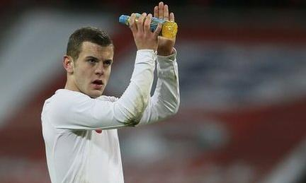
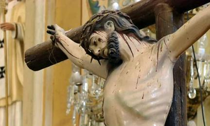
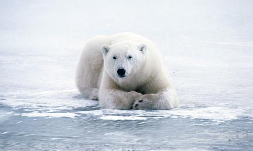
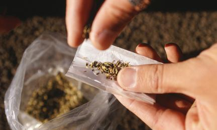
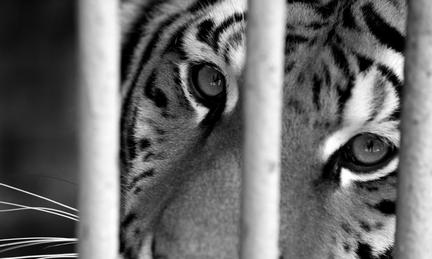
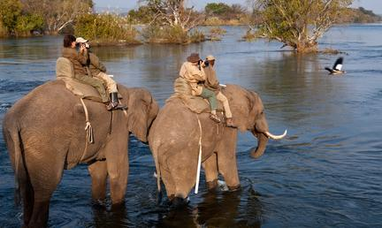

BBC Homepage
Top News Story
- Cardinals begin vote for new Pope
- Cardinals enter the Sistine Chapel in the Vatican, where they will vote to decide who will be the next leader of the world's 1.2bn Roman Catholics.

- Wilshere out of England qualifiers
- Arsenal's Jack Wilshere is out for three weeks with an ankle injury and will miss England's next two World Cup qualifiers.
- 
- Latin exodus
- Mexico is the world's second largest Roman Catholic country, but in the last decade four million people have left the faith. The BBC's Katya Adler looks at how crime and corruption in the nation are affecting the church.
- 
- From Ghana to the Vatican
- Cardinal Peter Turkson is Africa's leading candidate for the pontificate. The BBC's Will Ross looks at the life and legacy of the first-ever Ghanian cardinal.
- Close encounters
- Polar bears and humans could come into conflict more often as sea ice shrinks and the animals spend more time on land, conservationists say. The BBC's Helen Briggs reports.
- 
- Why we act against our beliefs
- Have you ever been forced to defend a position and ended up believing it? You have succumbed to one of the most famous theories in social psychology, writes Tom Stafford.
- High up in the mountain
- By the end of 2013, visitors to a popular US ski resort will legally be allowed to buy marijuana from licensed shops. Will it encourage tourists, or could it deter people from coming at all?
- 
- A bleak future
- Why being saved from smugglers does not always mean freedom for tigers seized in Bangkok.
- 
News
Top Story
Cardinals enter the Sistine Chapel in the Vatican, where they will vote to decide who will be the next leader of the world's 1.2bn Roman Catholics.
Cardinals enter the Sistine Chapel in the Vatican, where they will vote to decide who will be the next leader of the world's 1.2bn Roman Catholics.
Business
Sport

Ruby Walsh rides Hurricane Fly to victory in the Champion Hurdle and then leads Quevega to a record-equalling fifth win in a row.
More from BBC News
Entertainment & Arts
Top Story
 The Great Gatsby to open Cannes
The Great Gatsby to open Cannes Baz Luhrmann's adaptation of The Great Gatsby starring Leonardo DiCaprio is to open the 66th Cannes Festival in May.
Health
Top Story
A court blocks an "arbitrary and capricious" ban on the sale of large sugary drinks in New York City, a day before the law was to take effect.
Technology
Top Story
 Facebook 'likes' predict personality
Facebook 'likes' predict personality Research suggests that highly personal information can be gleaned from things users choose to like on Facebook.
Science & Environment
Top Story
Far-reaching restrictions on the trade in hardwood trees have been agreed at Cites, the major conservation meeting being held in Thailand.
Future
Hi-tech design offers breath of fresh air
New does not always mean better
Autos
One-off Miura Roadster surfaces in Florida
In LA, Corvette critics weigh new design
Travel
- World's most unusual towns
- From a circus-centric Florida community to an English high street near Shanghai, these five places are keeping it weird.

- Scotland's secret sculptor mystery
- In Edinburgh, delicate sculptures made from books have been appearing in cultural establishments across the city.

- Mini guide to romance in Paris
- The world’s most alluring city – with its tree-shaded boulevards, lamp-lit bridges, exquisite cuisine and cafe terraces – seduces any time of year or day.
- Cooking oil powers planes
- Dutch airline KLM has begun powering commercial flights from New York to Amsterdam with an eco-friendly fuel mix that includes oil used in Louisiana restaurants.

- Birding in Zambia’s wild
- Zambia's vast expanses of protected land promise real reward to any amateur ornithologist ready to reach for them.
- 
- Voices of Yogyakarta, Indonesia
- Part of the only remaining sultanate in the country, the Javanese city of Yogyakarta is widely considered to be the cultural heart of Indonesia.
- Airport hotels become stylish
- With more travellers taking to the skies than ever before, airport hotels around the world have started wooing fliers by throwing decades-old expectations out the window.

BBC in your language
Spanish
Ciento quince cardenales inician la elección del próximo Papa. Millones de católicos esperan conocer el nombre del sucesor de Benedicto XVI.
Arabic
قادة الكنيسة الكاثوليكية حول العالم يجتمعون في الفاتيكان لانتخاب البابا الجديد الذي يخلف بنيدكتوس السادس عشر.
Persian
با حضور کاردینالهای انتخاب کننده پاپ در دربار واتیکان، مقر رهبر کلیسای کاتولیک، روند انتخاب جانشین پاپ بندیکت شانزدهم آغاز شده است. درهای نمازخانه سیستین بسته شده و اولین رایگیری برای انتخاب پاپ جدید آغاز شده است.
Russian
Депутат Госдумы, которого британские власти подозревают в убийстве Александра Литвиненко, объявил, что не будет участвовать в слушаниях с целью установления причин гибели политэмигранта.
Some claim that monitoring ill patients remotely cuts costs and improves care - but others aren't so sure.